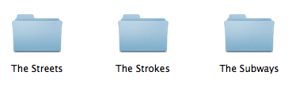
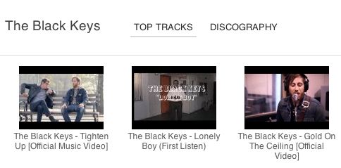

Dropbox Store your music collection in Dropbox and CloudTunes will keep it organized and always accessible via the web from anywhere. 
YouTube Extend your collection with music videos from YouTube. Browse vast amounts of music on YouTube by artist and album. 